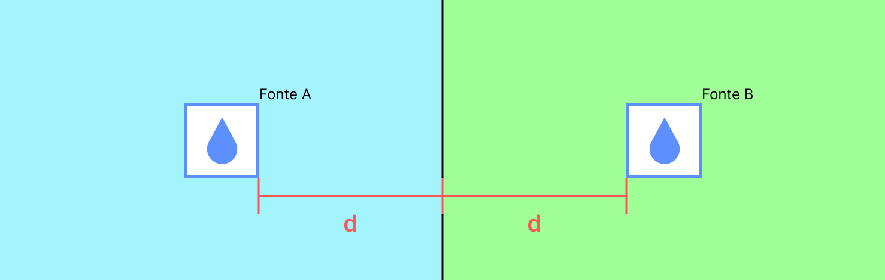
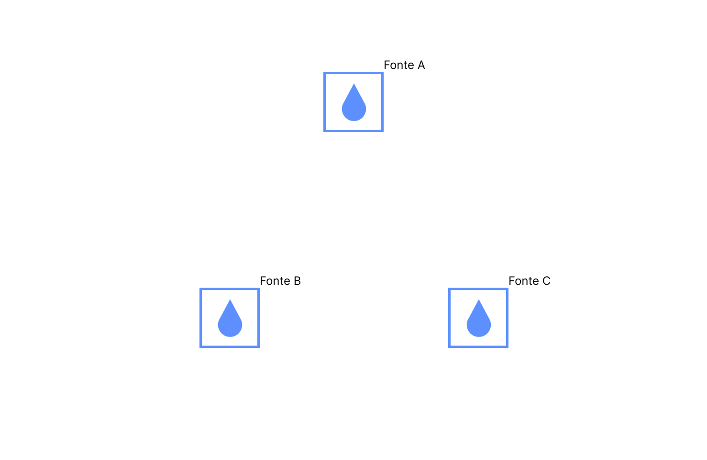
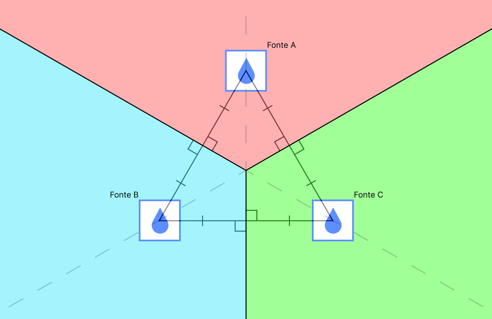

Imagine que você é um pássaro!
Você está voando o dia todo e não conseguiu beber nenhum gole de água. Por sorte, você sabe que ao seu redor, num raio de poucos quilômetros, existem algumas fontes de água. Aqui está o mapa da floresta:
Cada caixinha azul é um ponto de água diferente.
Aviso
Como sabemos qual ponto de água mais próximo de você?
Métodos de localização:
Método das distâncias
Você sabe sua posição e a posição das fontes de água ao seu redor pois você é um pássaro e seu senso de localização é ótimo! (quase um GPS biológico).
É possível calcular todas as distâncias entre os você e cada um dos pontos utilizando o teorema de pitágoras.
Pergunta
Tente encontrar o menor valor entre eles:
Resposta
O arquivo dist_m1.py calcula todas essas distâncias e imprime seus valores.
Lugar
Distância
Queda d’água
1.12 km
Riacho
2.92 km
Pedra do sapo
1.80 km
Córrego azul
2.24 km
Rio Branco
2.24 km
Pedra molhada
2.12 km
Lagoa doce
2.55 km
O ponto d’água mais próximo seria a Queda d’água com 1.12km de distância
É notável que essa tarefa não é muito eficiente. E, se saíssemos da mesma posição, precisaríamos calcular todas as distâncias novamente.
E se existisse um mapa que indique, para qualquer posição, qual a fonte d’água mais próxima?
Subdivisão por células

Como podemos dividir esse espaço de modo a indicar, para qualquer ponto no mapa, qual a fonte mais próxima?
Pergunta
Pegue um papel e uma caneta e tente desenhar esse diagrama!
Resposta
Vamos traçar uma aresta que passa entre ambas as fontes e pintar de azul todos os pontos em que estão à esquerda dela e de verde aqueles que estão a sua direita:

Agora, sabemos que, se você estiver em qualquer ponto azul, o ponto mais próximo é a A. Se você estiver em qualquer ponto verde, porém, o ponto mais próximo é a B.
Agora vamos tentar com três pontos:
Pergunta
Pegue um papel e uma caneta e tente desenhar esse diagrama!
Resposta
Se traçarmos uma reta que divide cada um dos pontos d’água entre si, podemos criar três arestas que subdividem o espaço em três células distintas.

Observe atentamente esse diagrama e preste atenção nos detalhes:
O cruzamento de todos os segmentos de reta é no baricentro do triangulo formado pelas ligações entre os pontos.
O ângulo entre cada uma das arestas e as retas que ligam 2 pontos é de 90º.
Uma aresta sempre divide ao meio uma reta que liga dois pontos.
Assim, é muito mais fácil ver qual o ponto d’água mais próximo para qualquer ponto do mapa!
Diagrama de Voronoi:
Dividindo pontos com arestas dessa maneira, podemos criar um mapa que nos conta exatamente qual o ponto mais próximo! Esse é o princípio do Diagrama de Voronoi.
Confira a versão do Diagrama interativa clicando no botão abaixo!